Our goal is to reverse engineer Wilma's client apps to create public and open-source client libraries.
OpenWilma libraries allow interacting with Wilma API and creating your own Wilma enabled applications using simple and secure libraries.
Tavoitteenamme on käänteismallintaa Wilman asiakassovellukset ja luoda niistä julkisia avoimen lähdekoodin kirjastoja.
OpenWilman kirjastot mahdollistavat Wilman ohjelmointirajapintaa (API) hyödyntävien sovellusten luomisen helppokäyttöisiä ja turvallisia kirjastoja hyödyntäen.